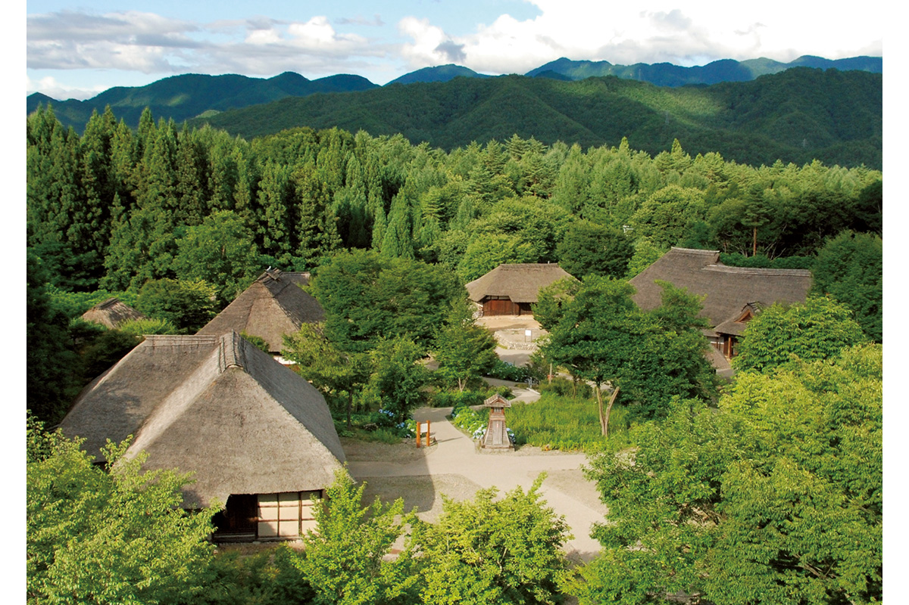
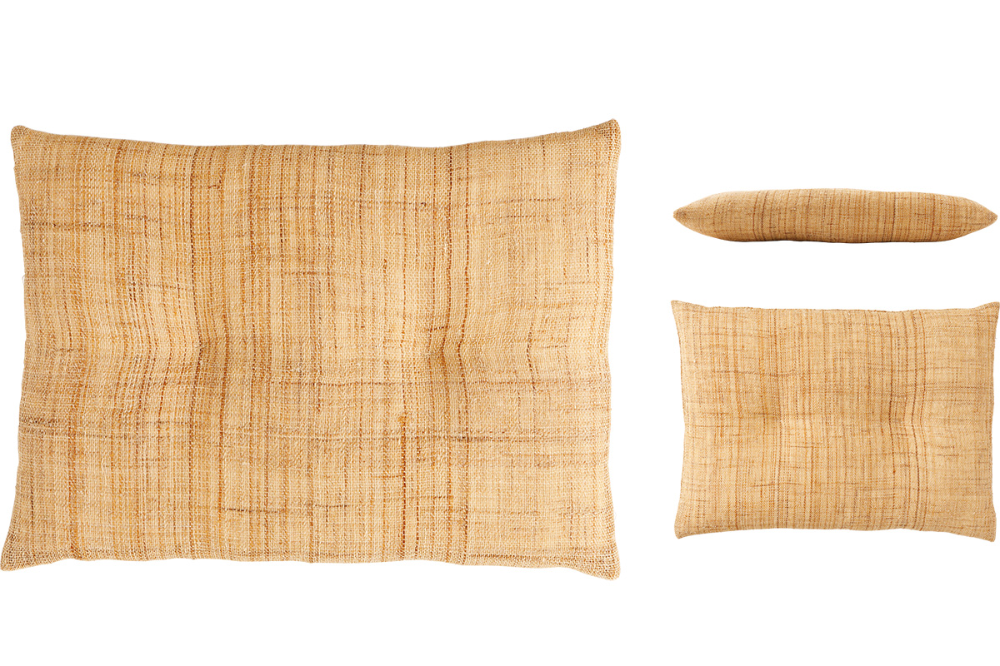
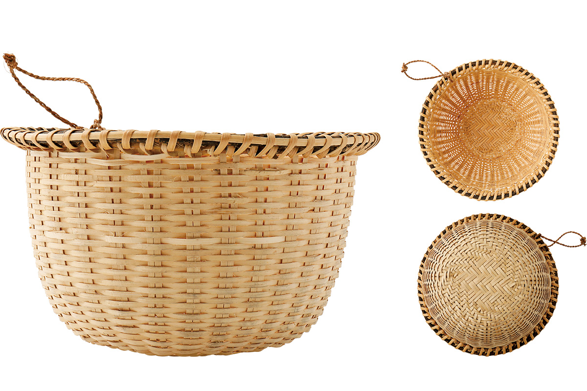

Префектура Фукусима · Оку-Айдзу · ремёсла
Оку-Айдзу: ткань из рами, корзины из лозы и музей народной утвари

В Оку-Айдзу, горной глубинке Айдзу, ремесло остаётся частью обычной жизни. Здесь растят рами и ткут из него ткань, плетут корзины из лесной лозы, а учиться этому приезжают со всей Японии.
Путь
Как философ нашёл Оку-Айдзу
Лучший сувенир из поездки это вещь, сделанная руками в той земле, где она родилась. Японское движение «мингэй», народного ремесла, появилось около ста лет назад как взгляд на повседневную жизнь. Философ, много лет изучающий мингэй, рассказал о месте, где этот взгляд оказался живым, и о том, как туда добраться.
Впервые он попал в Оку-Айдзу около 1990 года, летом после первого курса университета.
«Тогда я лишь мельком его увидел. Я приехал в Айдзу после похода по Одзе, а дальше поехал по линии Тадами в сторону Ниигаты. Из окна поезда я впервые увидел глухие горы Оку-Айдзу и полноводную реку Тадами между ними, и это меня поразило»
философ, исследователь мингэй
О поездке по этой линии читайте в статье о линии Тадами. Долго ему не удавалось вернуться, и случай представился, лишь когда ему было около 35 лет. Он изучал подсечное земледелие, при котором поле перед посевом выжигают огнём, и внимание исследователей привлекла деревня Сёва в Оку-Айдзу.
Ткань
Рами деревни Сёва и её «ткачихи»
«В Сёве рами, растение для ткани, в 2020 году по-прежнему выращивали старым способом. В начале лета, когда начинаются полевые работы, поле выжигают. И дело не только в поле: дальше идёт весь путь до готовой ткани. Всё делают руками, в лад с природой Оку-Айдзу. Я ездил туда снова и снова, и постепенно меня стало занимать уже именно это. К тому же среди мастеров есть мои ровесницы, приехавшие из других мест, их здесь зовут „орихимэ“, ткачихами»
философ, исследователь мингэй
Рами из Сёвы идёт и на знаменитые ткани соседней Ниигаты, одзия-тидзими и этиго-дзёфу, но сам по себе известен мало. Чтобы это изменить, деревня устроила учёбу с проживанием примерно на год, её прозвали «системой орихимэ». Часть выпускниц остаётся в деревне и работает с рами дальше.

Подушки ткачих из мастерской «Ватасибунэ» сделаны из тонкой ткани рами, сотканной из нити, спряденной вручную. Такая ткань хорошо впитывает влагу и быстро сохнет, а для натурального волокна очень прочная, поэтому из неё шьют летнюю одежду и мелкие вещи. На ощупь она особенно приятна. В 2020 году половинная подушка для сидения стоила 15 950 иен; большая подушка размером 400 на 290 мм и толщиной 65 мм.
«Ватасибунэ» это союз двух женщин, переехавших в Сёву. Они делают вещи из рами и передают ремесло дальше, а важнее всего для них мастер-классы.
«Ватасибунэ» (орихимэ)
- Адрес
- префектура Фукусима, уезд Онума, Сёва, Куимару, Мисима, 1053
- Как добраться
- подробности только по запросу через страницу в Facebook
Плетение
Корзины городка Мисима
По соседству с Сёвой, в городке Мисима, давно идёт «движение за ремёсла повседневной жизни». Здесь плетут корзины и короба из горного винограда и других лесных растений. Это тоже часть местного быта: сначала движение держалось на самих жителях, а потом город, как и Сёва, открыл учёбу для новичков, и заявки приходят со всей страны.
Вещи здесь делают как само собой разумеющееся, среди обычных дел, и вокруг этого собираются люди разных поколений и из разных мест. В таком устройстве жизни философ видит даже возможность нового общества.

Корзину для промывки риса плетут из мататаби, лианы актинидии: берут ветви длиной от 1 до 3 метров, которые отходят от одной лозы, и выбирают из них зрелые и толстые. Готовую корзину выставляют на зимний холод, чтобы она стала прочнее. В 2020 году такая корзина диаметром 220–230 мм и высотой 150 мм стоила около 6500 иен.
Дом ремёсел городка Мисима
- Адрес
- префектура Фукусима, уезд Онума, Мисима, Наири, 395
- Телефон
- +81 241-48-5502
- Часы работы
- 9:00–17:00
- Выходные
- понедельник (если праздник, то следующий день)
- Как добраться
- 15 минут пешком от станции Айдзу-Нисиката линии Тадами
Маршрут
Два дня по Оку-Айдзу
Удобнее всего ехать на машине. Первый день отдан ремёслам Мисимы и Сёвы. От станции JR Корияма около 90 минут до Дома ремёсел Мисимы, оттуда 10 минут до онсэна Хаято «Цуру-но ю», затем 30 минут до «Ватасибунэ» и ещё 10 минут до «Куимару-сё». Ночевать можно в одном из гостевых домов Мисимы и Сёвы.
«Куимару-сё» это старое здание начальной школы Куимару, которому больше 80 лет. Его перестроили под место встреч для жителей и путешественников, а на территории работает кафе, где подают собу.
«Куимару-сё»
- Адрес
- префектура Фукусима, уезд Онума, Сёва, Куимару, Миямаэ, 1374
- Телефон
- +81 241-57-2124 (отдел промышленности и строительства деревни Сёва)
- Часы работы
- 9:00–17:00
- Выходные
- понедельник, вторник (если праздник, то следующий день)
«Сококасико» это гостевой дом в старом деревенском доме, где проходят также события и художественные выставки.
«Сококасико»
- Адрес
- префектура Фукусима, уезд Онума, Мисима, Кувабара, Араясики, 1302
- Телефон
- +81 90-3345-3043
- Цены / Вход
- общая комната 4300 иен за ночь, отдельная комната на одного 8100 иен за ночь, завтрак 1000 иен, ужин от 3000 иен
- Сайт
- sokokashiko.info
SHARE BASE занимает дом старше 150 лет, который хозяева перестроили своими руками. Это многоцелевой гостевой дом, задуманный как «общее тайное убежище».
SHARE BASE, деревня Сёва
- Адрес
- префектура Фукусима, уезд Онума, Сёва, Нодзири, Мотомати, 4488
- Телефон
- +81 50-3695-3106
- Цены / Вход
- ночлег без питания 5000 иен с человека (каждой группе отдельная спальня), весь дом 50 000 иен (до 12 человек)
«Ясураги-но ядо Томариги» это крестьянский гостевой дом, где можно поработать в поле, сшить мелкие вещи из ткани и приготовить местные блюда, то есть пожить жизнью Оку-Айдзу.
«Ясураги-но ядо Томариги»
- Адрес
- префектура Фукусима, уезд Онума, Сёва, Оаси, 4478
- Телефон
- +81 241-57-3110
- Цены / Вход
- 7000 иен с человека за ночь с ужином и завтраком
Второй день проходит на юге Айдзу, среди старых деревень и музейных собраний. От ночлега 30–60 минут до Оути-дзюку, а оттуда час до музея Оку-Айдзу.
Оути-дзюку это почтовая станция на старой дороге, процветавшая в эпоху Эдо. Вдоль улицы стоят дома под соломенными крышами, и весь квартал охраняется государством как важный исторический район традиционной застройки.
Оути-дзюку (туристическая ассоциация Оути-дзюку)
- Адрес
- префектура Фукусима, уезд Минамиайдзу, Симого, Оути
- Телефон
- +81 241-68-3611
В музее Оку-Айдзу хранится около 24 000 предметов народной утвари и инструментов, которыми пользовались здесь сотни лет. Среди них есть вещи, внесённые в список важных культурных ценностей страны.
Музей Оку-Айдзу
- Адрес
- префектура Фукусима, уезд Минамиайдзу, Минамиайдзу, Итодзава, Нисидзаваяма, 3692-20
- Телефон
- +81 241-66-3077
- Часы работы
- 9:00–16:00
- Выходные
- с апреля по ноябрь без выходных, с декабря по март четверг
- Цены / Вход
- 300 иен для взрослых
«Всё это время я искал ответ на вопрос, зачем нам мингэй в наше время. Не как вещь из прошлого: мне хотелось заново понять его смысл в современной жизни. Уверенность в этом мне дала встреча с Оку-Айдзу. Здесь, кажется, скрыт прообраз не только мингэй, но и связи человека с природой, и самой жизни»
философ, исследователь мингэй
Фото: Норихито Судзуки.